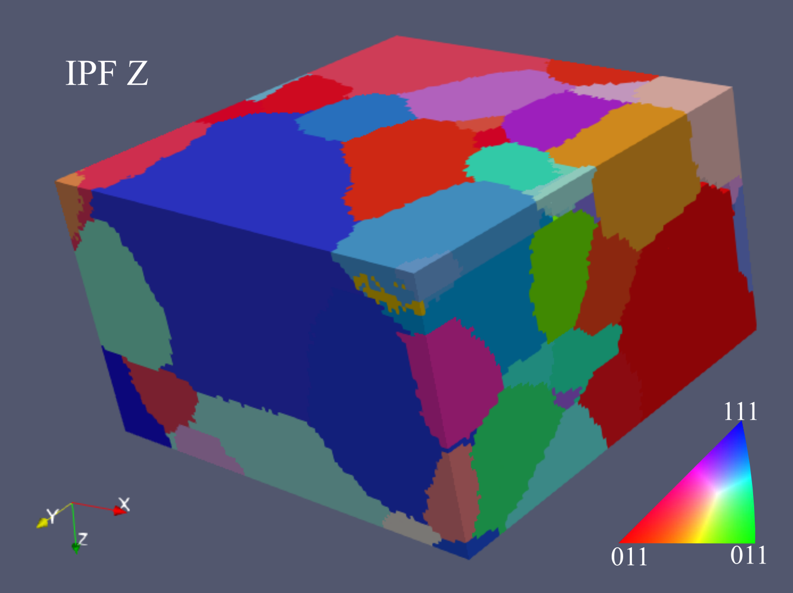
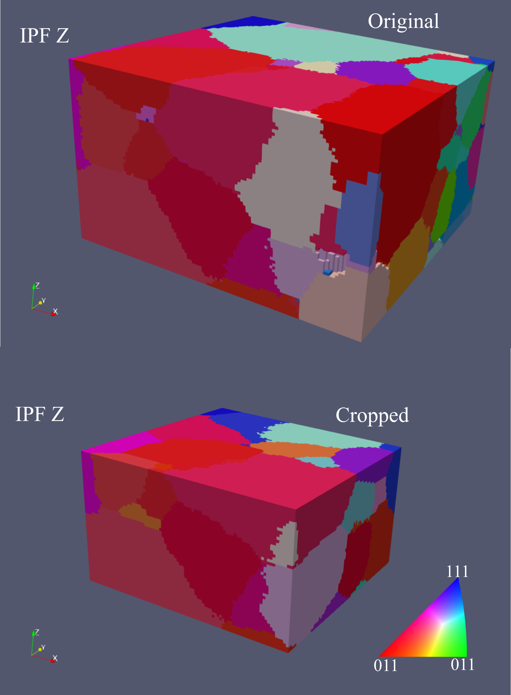
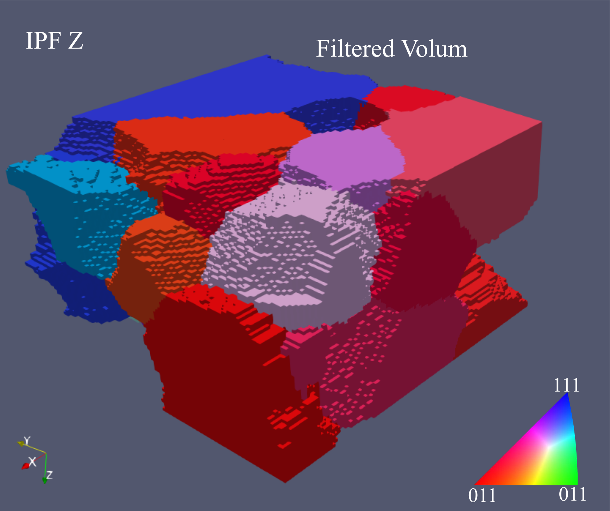
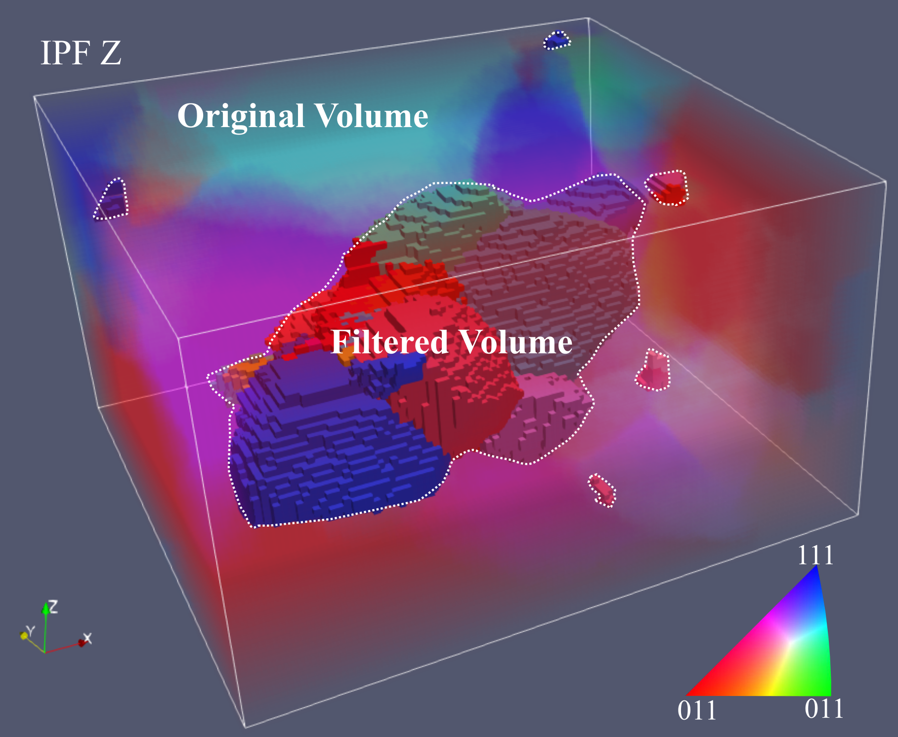
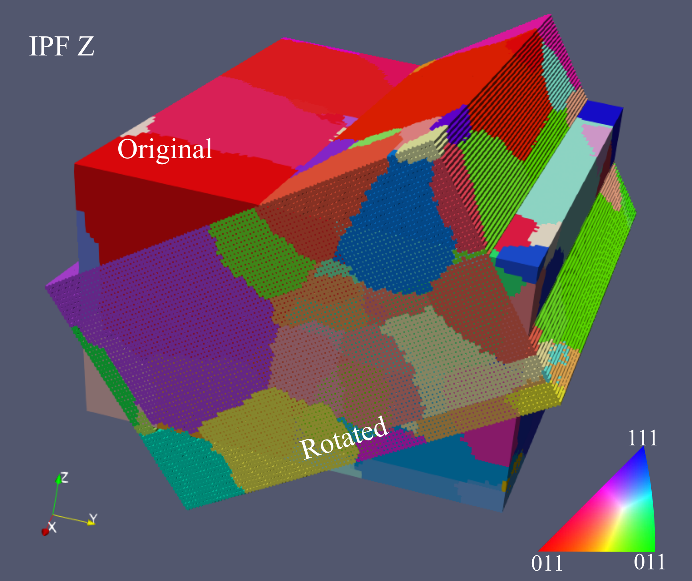
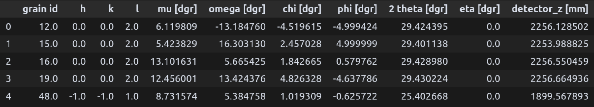
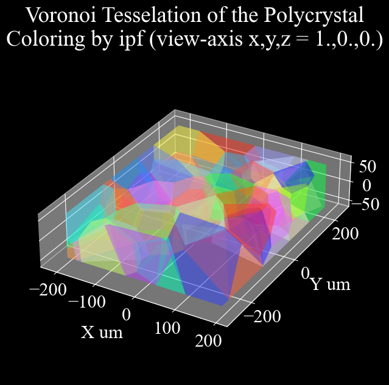

crispy#
a CRystal population metric InSpector written in PYthon.
crispy is a Python package for analyzing crystal population metrics from 3DXRD and lab-DCT data targeting interfacing between diffraction contrast modalities.
One of the central features of crispy is the provision of per-grain reflections diffraction information for Dark-Field X-ray Microscopy (DFXM) by analyzing 3DXRD grain maps and lab-DCT grain volumes.
Interfaces for reading, analyzing, and visualizing grain maps are provided for
3DXRD grain maps (3D scatter of grain centroids and grain orientations)
lab-DCT voxel volumes (3D voxel volumes where each voxel is a single crystal grain)
Usecase#
We can load a grain map from disc as
import crispy
# this could be a 3DXRD grain map or a lab-DCT grain volume
path_to_my_grain_map = crispy.assets.path.AL1050
grain_map = crispy.GrainMap( path_to_my_grain_map )
In this example we have a lab-DCT grain volume, we do some filtering to remove grains that are not of interest
grain_map.filter( min_grain_size_in_voxels = 200 )
grain_map.prune_boundary_grains()
Many more operations for manipulating grain maps are available – check out the docs!
We can now write the grain map to a file to visualize in paraview
grain_map.write("grain_map.xdmf")

To search for accessible reflections in DFXM mode for eta=0, we can use the crispy.dfxm.Goniometer class as
motor_bounds = {
"mu": (0, 20), # degrees
"omega": (-30, 30), # degrees
"chi": (-7, 7), # degrees
"phi": (-7, 7), # degrees
"detector_z": (-0.04, 1.96), # metres
"detector_y": (-0.169, 1.16) # metres
}
goniometer = crispy.dfxm.Goniometer(grain_map,
energy=17,
detector_distance=4,
motor_bounds=motor_bounds)
goniometer.find_reflections()
The resulting reflections can be accessed as
polycrystal.grains[i].dfxm
Providing a dictionary with refleciton information for each grain.
{'hkl': array([[0.],
[0.],
[2.]]),
'mu': array([12.7388667]),
'omega': array([1.78967645]),
'chi': array([-4.23236192]),
'phi': array([-2.77428247]),
'residual': array([0.]),
'theta': array([10.37543294])}
Alternatively, we can generate a pandas.DataFrame with reflection information for all grains as
df = goniometer.table_of_reflections()

It is also possible to load a 3DXRD grain map from a file tesselate and visualize.
path_to_my_grain_map = crispy.assets.path.FEAU
grain_map = crispy.GrainMap( path_to_my_grain_map )
grain_map.tesselate()
grain_map.colorize( np.eye(3) )
crispy.visualize.mesh( grain_map )

Installation#
To install crispy from source, run
git clone https://github.com/AxelHenningsson/crispy.git
cd crispy
pip install -e .
Documentation#
The extended documentation is about to be released at an externally hosted website.
GrainMap#
- class crispy._grain_map.GrainMap(grain_data, group_name='grains', lattice_parameters=None, symmetry=None)[source]#
Bases:
objectFactory class for creating
crispy.Polycrystalobjects.Creates
crispy.Polycrystalobjects from either a list ofImageD11.grain.grainobjects or an HDF5 file containing grain information. Supports both 3DXRD grain maps and lab-DCT grain volumes.Example:
import crispy # Load a 3DXRD grain map path_to_h5_3dxrd = crispy.assets.path.FEAU grain_map_3dxrd = crispy.GrainMap( path_to_h5_3dxrd, group_name="Fe", # match the top key in the h5 file lattice_parameters=[4.0493, 4.0493, 4.0493, 90.0, 90.0, 90.0], symmetry=225, # cubic fcc ) # Load a lab-DCT grain volume path_to_h5_lab_dct = crispy.assets.path.AL1050 grain_map_lab_dct = crispy.GrainMap(path_to_h5_lab_dct) # Access grains and reference cell # grain_map_3dxrd.grains # grain_map_lab_dct.grains # grain_map_3dxrd.reference_cell # grain_map_lab_dct.reference_cell
The factory returns either a
crispy.TDXRDMap(for 3DXRD) or acrispy.LabDCTVolume(for lab-DCT). Both types contain a grains attribute - a list of ImageD11.grain.grain objects representing individual grains. They also contain a reference cell that describes the lattice parameters and symmetry group of the material phase.Any resulting
crispy.Polycrystalcan be mounted on acrispy.dfxm.Goniometerto analyze accessible diffraction reflections for Dark-Field X-ray Microscopy.- Parameters:
grain_data (
strorlistofImageD11.grain.grain) – Either an absolute path to an HDF5 file containing grain data (3DXRD map or lab-DCT volume), or a list of ImageD11 grain objects. Example files can be found in the crispy.assets module.group_name (
str) – Name of the HDF5 group containing grain information. Only used for 3DXRD HDF5 files. Defaults to “grains”.lattice_parameters (
numpy.ndarray) – Crystal lattice parameters [a, b, c, alpha, beta, gamma]. Defaults to None.symmetry (
int) – Symmetry group of the phase. Defaults to None.
- Returns:
Either
crispy.TDXRDMaporcrispy.LabDCTVolume.- Raises:
ValueError – If grain_data is neither a list of grain objects nor a valid HDF5 file path.
Polycrystal#
- class crispy._polycrystal.Polycrystal[source]#
Bases:
objectBase class for representing polycrystalline materials.
This class serves as a base for specialized polycrystal implementations like
crispy.TDXRDMapandcrispy.LabDCTVolume. To create a polycrystal object, use thecrispy.GrainMapfactory class which dispatches to the appropriate implementation.All polycrystal objects share common attributes including a list of
ImageD11.grain.grainobjects representing individual grains and a reference cell describing the material’s lattice parameters and symmetry group.Any polycrystal object can be mounted on a
crispy.dfxm.Goniometerto analyze accessible diffraction reflections for Dark-Field X-ray Microscopy experiments.- reference_cell[source]#
Reference cell describing the material’s lattice parameters and symmetry group.
- Type:
ImageD11.unitcell
- grains[source]#
List of grain objects representing individual crystals in the polycrystal.
- Type:
listofImageD11.grain.grain
- neighbours[source]#
Array of
shape (N, ...)containing grain neighbour indices whereNis the number of grains and...depends on the number of neighbours per grain. I.e., if grainihas 3 neighbours, thenneighbours[i, :]contains the indices of the 3 neighbours.- Type:
numpy.ndarray
- texturize()[source]#
Compute the
misorientationsbetween all grain neighbours.Calculates and stores misorientation angles between adjacent grains in the polycrystal. This is an in-place operation that mutates the state of the
crispy.Polycrystalobject such that themisorientationsattribute is set.
- property misorientations[source]#
Return the misorientations between all grain neighbours.
- Returns:
- Array of misorientation angles between adjacent grains.
shape=(N, ...)whereNis the number of grains and the second dimension,..., depends on the number of neighbours per grain. I.e., if grainihas 3 neighbours, thenmisorientations[i, :]contains the misorientation angles between grainiand its 3 neighbours following the order of the attributeneighbours.
- Return type:
numpy.ndarray- Raises:
ValueError – If misorientations have not been computed via texturize().
- property ubi[source]#
Return the UBI matrices (sample frame reciprocal unit cell matrices) of all grains.
- Returns:
- Array of UBI matrices
with
shape=(N, 3, 3), whereNis the number of grains.
- Return type:
numpy.ndarray
- property u[source]#
Return the U matrices (orientation matrices) of all grains.
- Returns:
- Array of U matrices
with
shape=(N, 3, 3), whereNis the number of grains.
- Return type:
numpy.ndarray
- property orientation[source]#
Syntax sugar for
u.- Returns:
- Array of U matrices
with
shape=(N, 3, 3), whereNis the number of grains.
- Return type:
numpy.ndarray
- property b[source]#
Return the B matrices (crystal frame reciprocal unit cell matrices) of all grains.
- Returns:
- Array of B matrices
with
shape=(N, 3, 3), whereNis the number of grains.
- Return type:
numpy.ndarray
- property strain[source]#
Return the sample frame strain tensors of all grains.
- Returns:
- Array of strain tensors
with
shape=(N, 3, 3), whereNis the number of grains.
- Return type:
numpy.ndarray
- property crystal_system[source]#
Return the crystal system name.
- Returns:
- One of: triclinic, monoclinic, orthorhombic, tetragonal,
trigonal, hexagonal, or cubic.
- Return type:
str
- colorize(ipf_axes)[source]#
Compute and store IPF colors for all grains.
Uses orix (pyxem/orix) to calculate inverse pole figure colors for specified viewing directions and stores them in grain objects in the
grainsattribute under the rgb attribute.Example:
import crispy import numpy as np polycrystal = crispy.assets.grain_map.tdxrd_map() # Colorize the polycrystal with the y, and z axes polycrystal.colorize(np.array([[0, 1, 0], [0, 0, 1]])) # these can be accessed as follows grain = polycrystal.grains[0] ipf_rgb_color_x_view = grain.rgb[:, 0] ipf_rgb_color_y_view = grain.rgb[:, 1]
- Parameters:
ipf_axes (
numpy.ndarray) – Viewing directions to compute IPF colors for.shape=(k, 3)wherekis the number of directions.
- write(file_path, *args, **kwargs)[source]#
Write the polycrystal to a file readable by Paraview.
The grain volume will be written to the specified file path, the file format is
.xdmfor.vtk. The appropriate extension will automatically be added if it is not already present.- Parameters:
file_path (
str) – Absolute path to the file to write the polycrystal to, must end in.xdmfor.vtk.
TDXRDMap#
- class crispy._tdxrd_map.TDXRDMap(grainfile, group_name='grains', lattice_parameters=None, symmetry=None)[source]#
Bases:
PolycrystalClass to represent a polycrystal as a list of grain centroids and orientations.
- Parameters:
grainfile (
strorlistofImageD11.grain.grain) – Absolute path to the HDF5 file containing the grain information, or alternatively a list of ImageD11.grain.grain objects.group_name (
str) – The name of the group in the HDF5 file containing the grain information. Defaults to “grains”.
- u[source]#
All the U matrices of the grains in the polycrystal. Shape=(N, 3, 3).
- Type:
numpy.ndarray
- b[source]#
All the B matrices of the grains in the polycrystal. Shape=(N, 3, 3).
- Type:
numpy.ndarray
- misorientations[source]#
The misorientations between all grain neighbours. shape=(N,). each sub-array contains the misorientations between the corresponding grain and its neighbours. is None before calling the texturize() method.
- Type:
numpy.ndarray
- property bounding_box[source]#
Return the bounding box of the polycrystal, shape=(3,2)
Format is: [ [min_x, max_x], [min_y, max_y], [min_z, max_z] ].
computation is done by taking the min and max of the centroids.
- property extent[source]#
Return the extent of the polycrystal.
Format is: [ xwidth, ywidth, zwidth ].
computation is done by taking the min and max of the centroids.
- property sum_peak_intensity[source]#
Return sum intensity of all indexed peaks for each grain. shape=(N,)
- property std_peak_intensity[source]#
Return the standard deviation of peak intensities for all grains. shape=(N,)
- classmethod from_array(translations, ubi_matrices)[source]#
Instantiate the polycrystal from pure translations and ubi matrices.
This circumvents the need to read a grain file and ImageD11.grain.grain objects.
- Parameters:
translations (
iterableofnumpy.ndarray) – 3D grain center translations each of shape=(3,).ubi_matrices (
iterableofnumpy.ndarray) – ubi matrices each of shape=(3, 3).
- Returns:
The polycrystal object.
- Return type:
crispy._tdxrd_map.TDXRDMAP
- tesselate()[source]#
Perform a voronoi tesselation using crispy.tesselate.voronoi
Generates the polycrystal mesh with one convex polyhedra per grain.
- texturize()[source]#
Compute the misorientation between all grain neighbours.
NOTE: uses xfab.symmetry.Umis.
This function sets the misorientations attribute of the polycrystal object, such that self.misorientations[i] is a shape=(n,) array of misorientations between grain number i and its n neighbours. Each grain can have a different number of neighbours. The misorientation between grain i and its j-th neighbour is always the minimum misorientation between all possible orientations taking into account the crystal system symmetry.
- write(file_path, grains='all', neighbourhood=None)[source]#
Write the polycrystal to a file readable by Paraview.
The grain volume will be written to the specified file path, the file format is
.xdmfor.vtk. The appropriate extension will automatically be added if it is not already present.- Parameters:
file_path (
str) – Absolute path to the file to write the polycrystal to, must end in.xdmfor.vtk.grains (
listofintorintorstr) – The grain ids to write. Defaults to “all” in which case all grains in the polycrystal are written.neighbourhood (
int) – When not None, the grains argument is overwritten such that the grain number -neighbourhood- and all of its neighbours are written to file. Default is None.
LabDCTVolume#
- class crispy._lab_dct_volume.LabDCTVolume(file_path)[source]#
Bases:
PolycrystalClass to represent a voxelated lab-DCT grain volume.
Example:
import crispy h5_file_path = crispy.assets.path.AL1050 dct_volume = crispy.LabDCTVolume(h5_file_path)
This class represents a voxelated grain volume in the laboratory frame. It reads grain volume data from an HDF5 file in the lab-DCT format and provides methods for data manipulation. As a specific implementation of the
crispy.Polycrystalclass, it interfaces withcrispy.dfxm.Goniometerto search for DFXM reflections, useful for planning synchrotron measurements.The lab-DCT coordinate system (as implemented by xnovo) aligns with ESR ID11 and ID03 coordinate systems: z-axis points towards the ceiling, x-axis along beam propagation, and y-axis to the left as seen by a travelling photon. Loading a lab-DCT map unifies the coordinate system with that of
crispy.TDXRDMap.- Parameters:
file_path (
str) –Path to HDF5 file containing grain volume data in lab-DCT format. Required datasets:
LabDCT/Spacing: Voxel size in micronsLabDCT/Data/GrainId: Grain ID per voxelLabDCT/Data/Rodrigues: Rodrigues vector per voxelPhaseInfo/Phase01/UnitCell: Unit cell parametersPhaseInfo/Phase01/SpaceGroup: Space group of phase
- labels[source]#
Grain ID per voxel,
shape (m,n,o).axis=0isz,axis=1isy,axis=2isx. Coordinates increase along positive axis direction.- Type:
numpy.ndarray
- orientations[source]#
Grain orientations in matrix vector format,
shape (number_of_grains, 3, 3).- Type:
numpy.ndarray
- B0[source]#
B0 matrix (reciprocal lattice vectors in lab frame), upper triangular (3,3) matrix
- Type:
numpy.ndarray
- write(file_path)[source]#
Write the grain volume to paraview readable formats.
Example:
import crispy polycrystal = crispy.assets.grain_map.lab_dct_volume('Al1050') polycrystal.write("lab_dct_volume.xdmf")
The grain volume will be written to the specified file path, the file format is
.xdmf. This extension will automatically be added if it is not already present. The resulting .xdmf file can be viewed in Paraview:- The resulting point data will contain the following attributes:
spacing_in_um: The voxel size in microns.ipf_x: The x component of the IPF color.ipf_y: The y component of the IPF color.ipf_z: The z component of the IPF color.labels: The grain id for each voxel.grain_sizes: The size of each grain in units of voxels.
The data format is sparse in the sense that only non-void voxels will be written to the file.
- Parameters:
file_path (
str) – The path to the file to write the grain volume to. The file should be in the paraview readable format.
- property center_of_mass[source]#
The center of mass of the voxel volume in units of microns.
The center of mass is defined as the arithmetic mean of the coordinates of the non-void voxels.
- Returns:
numpy.ndarray of shape = (3,)
- crop(xmin=None, xmax=None, ymin=None, ymax=None, zmin=None, zmax=None)[source]#
Crop the voxel volume to the specified bounds.
Example:
import crispy dct_volume = crispy.assets.grain_map.lab_dct_volume('Al1050') bounds = dct_volume.bounding_box dct_volume.crop(xmin=bounds[0], xmax=bounds[1]//2, ymin=bounds[2] + 10, ymax=bounds[3]//2 + 10, zmin=bounds[4], zmax=bounds[5]//2, ) dct_volume.write("cropped_lab_dct_volume.xdmf")
The voxel volume will be cropped to the specified bounds. The attributes will be updated accordingly pruning any grains that are outside the bounds.
- Parameters:
xmin (
float) – The minimumxcoordinate of the crop.xmax (
float) – The maximumxcoordinate of the crop.ymin (
float) – The minimumycoordinate of the crop.ymax (
float) – The maximumycoordinate of the crop.zmin (
float) – The minimumzcoordinate of the crop.zmax (
float) – The maximumzcoordinate of the crop.
- texturize()[source]#
Compute the misorientation between all grain neighbours.
NOTE: uses xfab.symmetry.Umis.
This function sets the misorientations attribute of the polycrystal object, such that self.misorientations[i] is a shape=(n,) array of misorientations between grain number i and its n neighbours. Each grain can have a different number of neighbours. The misorientation between grain i and its j-th neighbour is always the minimum misorientation between all possible orientations taking into account the crystal system symmetry.
- center_volume()[source]#
Center the volume around the center of mass.
Example:
import crispy dct_volume = crispy.assets.grain_map.lab_dct_volume('Al1050') dct_volume.center_volume() # the dct_volume.center_of_mass will now be (0,0,0)
This in place-operation will update the voxel arrays by applying the inverse translation of the current center of mass.
- filter(min_grain_size_in_voxels)[source]#
Filter the grains based on their size.
Example:
import crispy dct_volume = crispy.assets.grain_map.lab_dct_volume('Al1050') dct_volume.filter(min_grain_size_in_voxels=10000) dct_volume.write("filtered_lab_dct_volume.xdmf")
Grains with a size smaller than grain_size will be removed from the voxel volume. Attributes will be updated accordingly.
- Parameters:
min_grain_size_in_voxels (
int) – The minimum size of the grains to keep in units of voxels.
- prune_boundary_grains()[source]#
Prune the boundary grains.
This will remove all grains that thuch the edge of the volume.
Example:
import crispy dct_volume = crispy.assets.grain_map.lab_dct_volume('Al1050') dct_volume.prune_boundary_grains() dct_volume.write("pruned_lab_dct_volume.xdmf")
This will remove all grains that are on the boundary of the voxel volume.
- translate(translation)[source]#
Translate the voxel volume by the specified translation.
The voxel volume will be translated by the specified translation. The attributes will be updated accordingly.
This is usefull for realigning the voxel volume to be used in diffraction simulations or in integration with a synchrotron measurement setting.
- Parameters:
translation (
np.ndarray) – The translation vector in units of microns. The translation vector should be ofshape (3,).
- rotate(rotation)[source]#
Rotate the voxel volume by the specified rotation.
Example:
import crispy import numpy as np dct_volume = crispy.assets.grain_map.lab_dct_volume('Al1050') angle = np.radians(32.3) rotation = np.array([ [1, 0, 0 ], [0, np.cos(angle), -np.sin(angle)], [0, np.sin(angle), np.cos(angle)]]) dct_volume.rotate(rotation) dct_volume.write("rotated_lab_dct_volume.xdmf")
The voxel volume will be rotated by the specified rotation. The attributes will be updated accordingly. Note that the frame of reference is the lab frame which is initally aligned with the voxel volume grid. After subsequent rotations, the frame of reference may not be aligned with the voxel volume grid.
This will update both voxel coordinates and grain orientations.
This is usefull for realigning the voxel volume to be used in diffraction simulations or in integration with a synchrotron measurement setting.
- Parameters:
rotation (
np.ndarrayorscipy.spatial.transform.Rotation) – The rotation matrix, rotation vector or rotation object to rotate the voxel volume by. if this is a rotation vector, it should be ofshape (3,)with the norm equal to the angle of rotation in radians. The direction of the vector is the axis of rotation.
dfxm#
- class crispy.dfxm.Goniometer(polycrystal, energy, detector_distance, motor_bounds)[source]#
Bases:
objectA class representing a Dark-Field X-ray Microscopy (DFXM) experimental setup.
This class calculates the required microscope angular settings to bring a set of Miller indices into diffraction condition at specific turntable rotations.
- motor_bounds[source]#
Motor limits for the goniometer/hexapod in degrees (sample stage) and metres (detector translations). Keys are shown in the example below:
- Type:
dict
motor_bounds = { "mu": (0, 20), # degrees "omega": (-22, 22), # degrees "chi": (-5, 5), # degrees "phi": (-5, 5), # degrees "detector_z": (-0.04, 1.96), # metres "detector_y": (-0.169, 1.16) # metres }
- find_reflections(alignment_tol=0.0001, maxiter=None, maxls=25, ftol=None, mask_unreachable=False)[source]#
Find all reflections reachable by the goniometer in DFXM in “simplified geometry”.
Example:
import crispy polycrystal = crispy.assets.grain_map.tdxrd_map() motor_bounds = { "mu": (0, 20), # degrees "omega": (-22, 22), # degrees "chi": (-5, 5), # degrees "phi": (-5, 5), # degrees "detector_z": (-0.04, 1.96), # metres "detector_y": (-0.169, 1.16) # metres } goniometer = crispy.dfxm.Goniometer(polycrystal, energy=17, detector_distance=4, motor_bounds=motor_bounds) goniometer.find_reflections() # The found reflections are stored in the `dfxm` dictionary of each grain. reflections_grain_12 = polycrystal.grains[12].dfxm
Output dictorary for
reflections_grain_12:“chi”: array([-4.51990607])
“hkl”: array([[0.], [0.], [2.]])
“mu”: array([6.12038619])
“omega”: array([-13.18363797])
“phi”: array([-4.99889719])
“residual”: array([0.])
“theta”: array([14.71219735])
The reflections are found by running an optimisation algorithm that aligns the lattice normals with target vectors. The target vectors are defined as the z-axis rotated by the Bragg angle in the xz-plane into the reverse direction of the beam, which is assumed to propagate in the positive x-direction.
The reflections are stored in the
dfxmdictionary of each grain with keys:“hkl”: Miller indices of diffracting planes
“mu”: Mu angles at which diffraction occurs
“omega”: Omega angles at which diffraction occurs
“chi”: Chi angles at which diffraction occurs
“phi”: Phi angles at which diffraction occurs
“residual”: Misalignment between target Q-vector and aligned lattice normal
“theta”: Bragg angles at which diffraction occurs
To access the reflections of grain
i, use:polycrystal.grains[i].dfxm[“hkl”] # etc.
- Parameters:
alignment_tol (
float) – Tolerance for determining if optimisation aligned the reflection, in degrees. Represents misalignment between lattice normal and target vector. Default is 1e-4.maxiter (
int) – Maximum iterations for L-BFGS-B optimisation. Default isNone, set to 200 * N where N is number of reflections.maxls (
int) – Maximum line search iterations per L-BFGS-B iteration. Default is 25.ftol (
float) – Tolerance for optimisation cost function termination. Default isNone, set to 1e-8 / N where N is number of reflections.mask_unreachable (
bool) – IfTrue, mask reflections unreachable by goniometer/hexapod. A reflection is unreachable if misalignment exceeds the sum of absolute motor bounds. Default isFalse. Masking speeds up optimisation by excluding unreachable reflections. When enabled, unreachable reflections havenp.nanvalues in solution and residuals.
- table_of_reflections()[source]#
Compile a
pandas.DataFrameof the reflections found byfind_reflections().Example:
import crispy polycrystal = crispy.assets.grain_map.tdxrd_map() motor_bounds = { "mu": (0, 20), # degrees "omega": (-22, 22), # degrees "chi": (-5, 5), # degrees "phi": (-5, 5), # degrees "detector_z": (-0.04, 1.96), # metres "detector_y": (-0.169, 1.16) # metres } goniometer = crispy.dfxm.Goniometer(polycrystal, energy=17, detector_distance=4, motor_bounds=motor_bounds) goniometer.find_reflections() df = goniometer.table_of_reflections()
Output
pandas.DataFramefordflooks like this:- Raises:
ValueError – if
find_reflections()has not been run.- Returns:
- DataFrame of the reflections found
by
find_reflections(). For each grain, the DataFrame contains column in accordance with the keys in thedfxmdictionary of the grain. seefind_reflections()for more details.
- Return type:
pandas.DataFrame
- find_symmetry_axis(alignment_tol=0.0001, maxiter=None, maxls=25, ftol=None, mask_unreachable=False)[source]#
Find all Miller indices that can be aligned with the z-axis within motor bounds.
This allows for the identification of various oblique imaging geometries in which multiple reflections are reachable by pure z-axis rotations.
Example:
import crispy polycrystal = crispy.assets.grain_map.lab_dct_volume("Al1050") motor_bounds = { "mu": (0, 20), # degrees "omega": (-30, 30), # degrees "chi": (-7, 7), # degrees "phi": (-7, 7), # degrees "detector_z": (-0.04, 1.96), # metres "detector_y": (-0.169, 1.16) # metres } goniometer = crispy.dfxm.Goniometer(polycrystal, energy=17, detector_distance=4, motor_bounds=motor_bounds) goniometer.find_symmetry_axis()
Finds all reachable reflections in the polycrystal using an optimisation algorithm that aligns lattice normals with target vectors (defined as the z-axis). The reflections are stored in the polycrystal grain objects as dictionaries named
symmetry_axiswith the following keys:“hkl”: Miller indices that can diffract
“mu”: Mu angles at which diffraction occurs
“omega”: Omega angles at which diffraction occurs
“chi”: Chi angles at which diffraction occurs
“phi”: Phi angles at which diffraction occurs
“residual”: Radians between lattice normal and z-axis
To access the symmetry axis of grain
i, use:polycrystal.grains[i].symmetry_axis[“hkl”] # etc.
- Parameters:
alignment_tol (
float) – Tolerance in degrees for determining if the optimisation aligned the lattice normal with the z-axis. Represents the misalignment between lattice normal and target vector. Default is 1e-4.maxiter (
int) – Maximum iterations for L-BFGS-B optimisation. Default is None (set to 200 * N, where N is number of reflections).maxls (
int) – Maximum line search iterations per L-BFGS-B iteration. Default is 25.ftol (
float) – Tolerance for optimisation cost function termination. Default is None (set to 1e-8 / N, where N is number of reflections).mask_unreachable (
bool) – If True, mask unreachable lattice normals by the goniometer/hexapod. A lattice normal is unreachable if its misalignment exceeds the maximum sum of absolute motor bounds. Default is False. Masking speeds up optimisation by excluding unreachable lattice normals. When enabled, solution and residual arrays contain np.nan for unreachable lattice normals.
vizualise#
The vizualisation module contains functions genreally targeting visualising voronoi tesselations
of polycrystals. I.e these function are usefull for crispy.TDXRDMap <crispy._tdxrd_map.TDXRDMap>
For lab-DCT volumes, see crispy.LabDCTVolume.write() <crispy._lab_dct_volume.LabDCTVolume.write>
for writing to paraview files to disc for visualization.
- crispy.vizualise.mesh(polycrystal, neighbourhood=None, select=None)[source]#
Plot the Voronoi tesselation of the polycrystal.
Example:
import matplotlib.pyplot as plt import numpy as np import crispy polycrystal = crispy.assets.grain_map.tdxrd_map() polycrystal.tesselate() polycrystal.colorize(np.eye(3)) fig, ax = crispy.vizualise.mesh(polycrystal) plt.show()
- Parameters:
polycrystal (
crispy.TDXRDMap) – The polycrystal object.neighbourhood (
int, optional) – When not None, the grain with number -neighbourhood- and all of its neighbours are plotted. Default is None, in which case the entire polycrystal mesh is plotted.select (
listofint, optional) – List of grain indices to plot. Default is None.
- Returns:
matplotlib.figure.Figure,matplotlib.axes.Axes
assets#
Module to load example data and phantoms.
Here you will find example datasets and phantoms that can be used to test and demonstrate the functionality of the crispy package. These assets are stored in the assets directory of the repository.
- class crispy.assets.path[source]#
Bases:
objectAbsolute paths to various assets.
- Currently availabel example datasets are:
…/crispy/assets/FeAu_0p5_tR_ff1_grains.h5
…/crispy/assets/lab_dct_silicon.h5
…/crispy/assets/lab_dct_Al1050.h5
- class crispy.assets.grain_map[source]#
Bases:
objectClass to load example grain maps.
Various assets and example dataset are available in the assets directory.
- tdxrd_map()[source]#
Load a grain map from the ID11 beamline at ESRF on a FeAu sample.
- Returns:
List of grains in the grain map.
- Return type:
listofImageD11.grain.grain
- lab_dct_volume()[source]#
Load a lab-dct volume.
- Parameters:
name (
str) – The name of the lab-dct volume to load. This can be one of the following: - “Al1050”: A lab-dct volume of a small polycrystalline Al1050 sample. - “silicon”: A lab-dct volume of three silicon single crystals shards. Defaults to “Al1050”.- Raises:
ValueError – If the name is not one of the available assets.
- Returns:
Lab-dct volume.
- Return type: